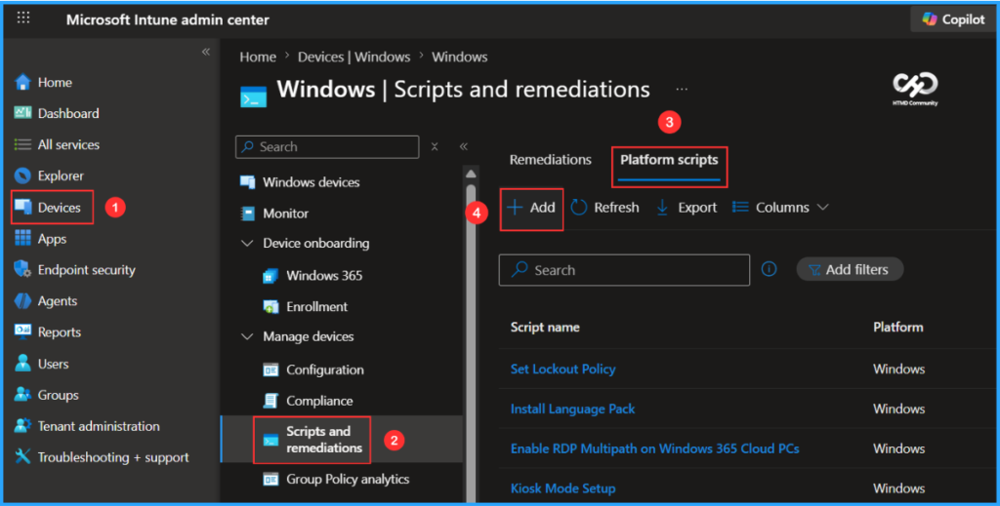
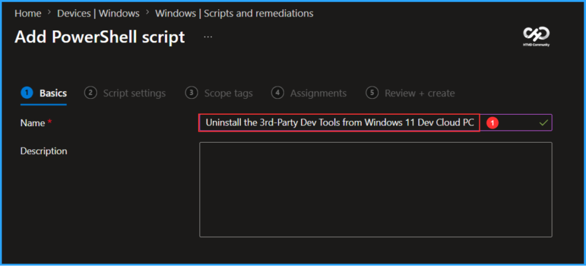
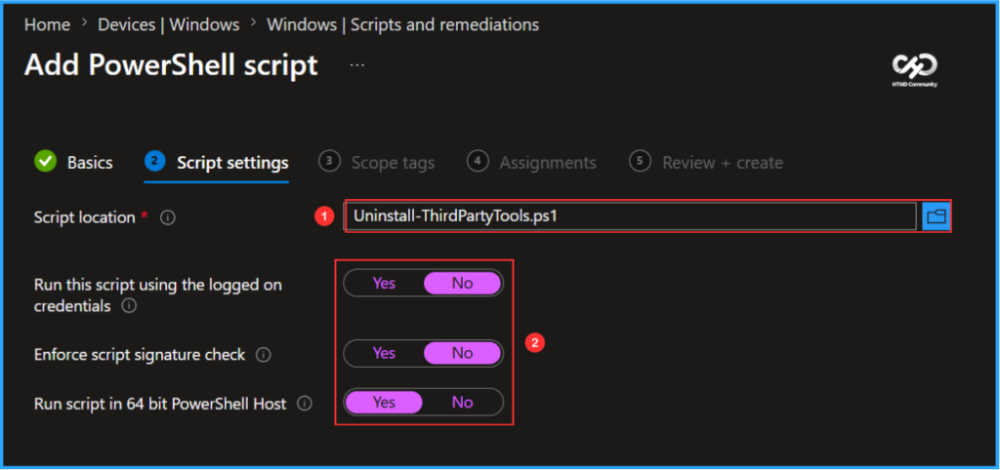
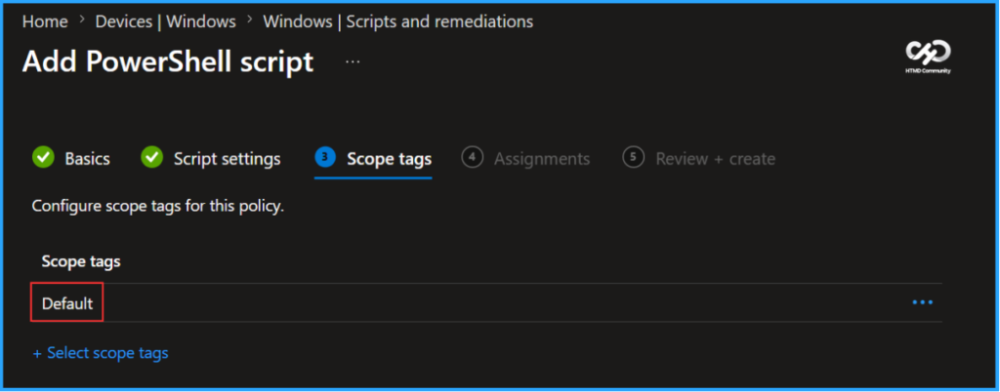
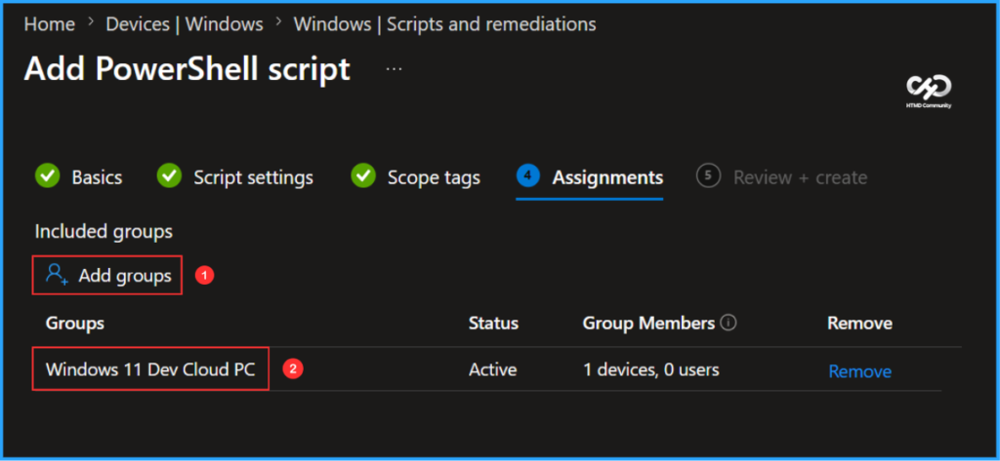
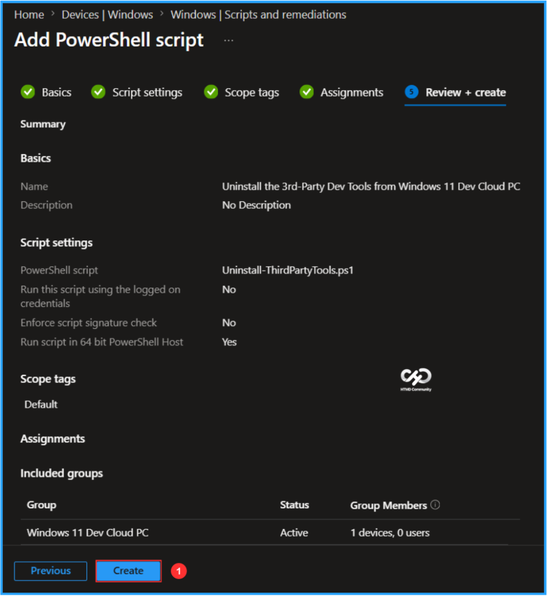
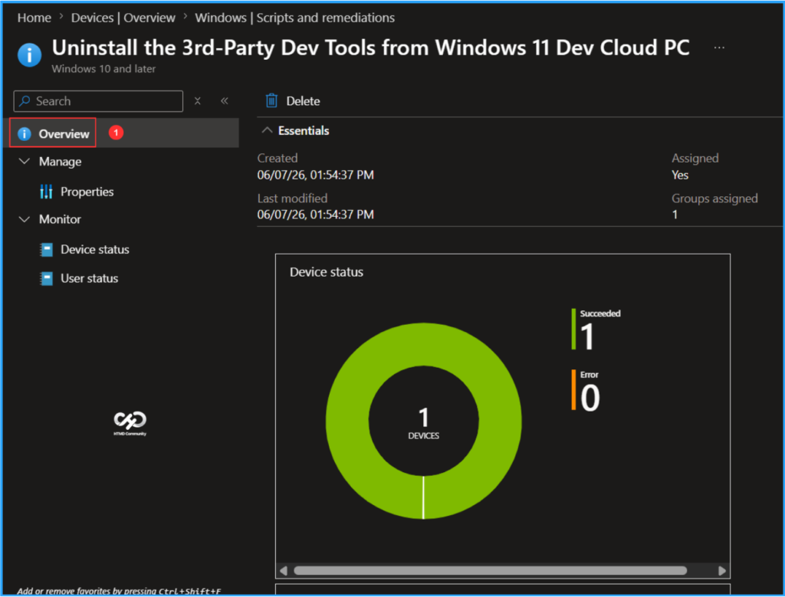

Key Takeways
- Provides a ready-to-use developer environment with preinstalled tools and standardized configurations.
- Reduces onboarding time and eliminates manual setup for developers.
- Includes Windows, WSL Ubuntu, and essential development tools such as VS Code, PowerShell 7, Python, Node.js, Git, and Azure CLI.
- An uninstall script is available to remove preinstalled third-party developer tools when they are no longer required.
In this article, I’ll walk you through how to uninstall the 3rd-party Dev tools from Windows 11 Dev Cloud PC using the Microsoft Intune PowerShell Script. If you no longer require the preinstalled third-party developer tools included in the Windows 11 Developer Configuration image, Microsoft provides an uninstall script to remove them. This script helps administrators clean up the development environment by uninstalling tools such as Visual Studio Code, Python, Node.js, Git, PowerToys, Azure CLI, and other developer utilities, thereby allowing the Cloud PC to be repurposed or customized to meet organizational requirements.
Table of Content
Here’s a concise table for What Gets Removed. The script removes selected third-party developer tools and related configurations while preserving the core Windows operating system and Windows 11 Developer Configuration image functionality.
| Component | What Gets Removed |
|---|---|
| Python 3.13 | MSI installation and the C:\Python313 installation directory |
| Node.js LTS | Node.js installed via WinGet package |
| nvm-windows | %ProgramData%\nvm directory and %ProgramFiles%\nodejs symlink |
| Oh My Posh | %ProgramFiles%\oh-my-posh installation directory |
| Nerd Fonts | Cascadia Code Nerd Font and Cascadia Mono Nerd Font variants (font files and registry entries) |
| UV Tools | %ProgramData%\UVTools directory |
| Ubuntu WSL Distribution | Ubuntu WSL instance, VHDX files, installation folder, and related registry entries |
| WSL Registry Entries | HKCU\Software\Microsoft\Windows\CurrentVersion\Lxss keys, including default-user settings |
| PATH Environment Variables | Tool-specific entries added to the machine PATH |
| Windows Terminal Configuration | Oh My Posh configuration blocks from settings.json |
| PowerShell Profiles | Oh My Posh entries from Microsoft.PowerShell_profile.ps1 for all local users |
To uninstall the third-party development tools from a Windows 11 Dev Cloud PC using an Intune PowerShell script, follow these steps. I will be utilizing the platform script for this configuration. First, log in to the Microsoft Intune Admin Center using your administrator credentials. Alternatively, you can use the remediation script here to enable on-demand remediation.
- Navigate to Devices > Windows > Scripts and remediations
- Click on Platform scripts > +Add

In the Basics details pane, we can name the PowerShell Script “Uninstall the 3rd-Party Dev Tools from Windows 11 Dev Cloud PC.” It is helpful to provide a brief description about the script and click Next.

Let’s create a PowerShell script from scratch to Uninstall 3rd-Party Dev Tools from Windows 11 Dev Cloud PC. This PowerShell script is designed for users who have deployed a Cloud PC using the Windows 365 Dev Ready Image and want to remove the preinstalled third-party developer tools from their device.
As part of the cleanup process, the script uninstalls Node.js and then reinstalls GitHub Copilot CLI as a standalone application. This ensures that the Copilot command continues to work even after Node.js has been removed.
#####################################################################################################################################################################>
# <copyright company="Microsoft">
# Copyright (c) Microsoft Corporation. All rights reserved.
# </copyright>
#
# .SYNOPSIS
# Uninstalls third-party developer tools installed in Dev Ready Image:
# - Python 3.13 (winget)
# - Node.js LTS (winget)
# - nvm-windows (%ProgramData%\nvm + %ProgramFiles%\nodejs symlink)
# - oh-my-posh (%ProgramFiles%\oh-my-posh) + Cascadia fonts
# - uv tools (%ProgramData%\UVTools)
# - Ubuntu WSL (VHDX, folder, and registry keys)
#
# After removing Node.js, reinstalls GitHub Copilot CLI as a standalone
# exe (winget: GitHub.Copilot) and patches the npm shims (copilot.ps1,
# copilot.cmd) so the 'copilot' command and Start Menu shortcut keep
# working without Node.js.
#
# .REQUIREMENTS
# 1). Run from an elevated PowerShell window (Windows PowerShell 5.1 or PowerShell 7+).
# 2). A reboot is recommended after execution.
#
# .EXAMPLE
# .\Uninstall-ThirdPartyTools.ps1
#####################################################################################################################################################################>
#Requires -Version 5.1
#Requires -RunAsAdministrator
Set-StrictMode -Version Latest
$ErrorActionPreference = "Stop"
$ProgressPreference = "SilentlyContinue"
#region Helpers
function Write-Section([string]$Title)
{
Write-Host ""
Write-Host "============================================================" -ForegroundColor DarkCyan
Write-Host $Title -ForegroundColor Cyan
Write-Host "============================================================" -ForegroundColor DarkCyan
}
function Assert-Admin
{
$id = [Security.Principal.WindowsIdentity]::GetCurrent()
$p = New-Object Security.Principal.WindowsPrincipal($id)
if (-not $p.IsInRole([Security.Principal.WindowsBuiltInRole]::Administrator))
{
throw "Please run this script in an elevated PowerShell (Run as Administrator)."
}
}
function Remove-FromMachinePath([string]$PathToRemove)
{
$machinePath = [Environment]::GetEnvironmentVariable("Path", "Machine")
$entries = $machinePath -split ';' | Where-Object { $_.TrimEnd('\') -ne $PathToRemove.TrimEnd('\') }
$newPath = ($entries | Where-Object { $_ -ne '' }) -join ';'
[Environment]::SetEnvironmentVariable("Path", $newPath, "Machine")
}
function Test-WinGetPackageInstalled([string]$Id)
{
# winget can exit 0 even when nothing matches, so parse the output instead
# of trusting $LASTEXITCODE. Pass --accept-source-agreements to avoid the
# first-run interactive source-acceptance prompt on a fresh image.
$output = winget list --id $Id --exact --source winget --accept-source-agreements --disable-interactivity 2>&1 | Out-String
if ($LASTEXITCODE -ne 0) { return $false }
if ($output -match 'No installed package found') { return $false }
# winget prints the package id in the result table only when a match exists.
return ($output -match [regex]::Escape($Id))
}
#endregion Helpers
#region Discovery — build a manifest of what exists on this machine
function Find-ItemsToRemove
{
$items = [ordered]@{}
# --- Winget packages ---
$items.WingetPackages = @()
$wingetTools = @(
@{ Ids = @("Python.Python.3.13"); Name = "Python" }
@{ Ids = @("OpenJS.NodeJS.LTS"); Name = "Node.js" }
)
foreach ($tool in $wingetTools)
{
foreach ($id in $tool.Ids)
{
if (Test-WinGetPackageInstalled $id)
{
$items.WingetPackages += @{ Id = $id; Name = "$($tool.Name) ($id)" }
}
}
}
# --- Python 3.13 MSI fallback (winget registration may be lost after sysprep) ---
$items.PythonMsiGuids = @()
$pythonFoundViaWinget = @($items.WingetPackages | Where-Object { $_.Id -eq "Python.Python.3.13" }).Count -gt 0
if (-not $pythonFoundViaWinget)
{
$arpPaths = @(
"HKLM:\SOFTWARE\Microsoft\Windows\CurrentVersion\Uninstall"
"HKLM:\SOFTWARE\WOW6432Node\Microsoft\Windows\CurrentVersion\Uninstall"
)
foreach ($arpPath in $arpPaths)
{
Get-ChildItem $arpPath -ErrorAction SilentlyContinue | ForEach-Object {
$props = Get-ItemProperty $_.PSPath -ErrorAction SilentlyContinue
if ($props -and $props.PSObject.Properties['DisplayName'] -and $props.DisplayName -match '^Python 3\.13')
{
$items.PythonMsiGuids += @{
Guid = $_.PSChildName
DisplayName = $props.DisplayName
Uninstall = $props.UninstallString
}
}
}
}
}
# --- Python 3.13 install directory (may remain after MSI uninstall) ---
$items.PythonDir = $null
$pythonDir = Join-Path $env:ProgramFiles "Python313"
if (Test-Path $pythonDir)
{
$items.PythonDir = $pythonDir
}
# --- Folders ---
$items.Folders = @()
$folderCandidates = @(
@{ Path = (Join-Path $env:ProgramData "nvm"); Label = "nvm-windows" }
@{ Path = (Join-Path $env:ProgramFiles "nodejs"); Label = "nvm Node.js symlink" }
@{ Path = (Join-Path $env:ProgramFiles "oh-my-posh"); Label = "oh-my-posh (bin + themes)" }
@{ Path = (Join-Path $env:ProgramData "UVTools"); Label = "uv binary" }
@{ Path = (Join-Path $env:ProgramData "UbuntuDistro"); Label = "Ubuntu VHDX" }
)
if ($items.PythonDir)
{
$folderCandidates += @{ Path = $items.PythonDir; Label = "Python 3.13" }
}
foreach ($f in $folderCandidates)
{
if (Test-Path $f.Path)
{
$items.Folders += $f
}
}
# --- Fonts ---
$items.Fonts = @()
$cascadiaFonts = Get-ChildItem "$env:WINDIR\Fonts" -Filter "Cascadia*.ttf" -ErrorAction SilentlyContinue
foreach ($font in $cascadiaFonts)
{
$items.Fonts += $font.FullName
}
# --- Registry: Ubuntu Lxss (HKCU) ---
$items.UbuntuLxss = @{ Found = $false; Guid = $null; LxssPath = "HKCU:\Software\Microsoft\Windows\CurrentVersion\Lxss" }
$lxssPath = $items.UbuntuLxss.LxssPath
if (Test-Path $lxssPath)
{
$subKeys = Get-ChildItem -Path $lxssPath -ErrorAction SilentlyContinue
foreach ($key in $subKeys)
{
$distroName = (Get-ItemProperty -Path $key.PSPath -Name "DistributionName" -ErrorAction SilentlyContinue).DistributionName
if ($distroName -eq "Ubuntu")
{
$items.UbuntuLxss.Found = $true
$items.UbuntuLxss.Guid = $key.PSChildName
break
}
}
}
# --- Registry: Ubuntu Lxss (Default User hive) ---
$items.DefaultUserLxss = @{ Found = $false; HivePath = "HKU\TempUninstall\SOFTWARE\Microsoft\Windows\CurrentVersion\Lxss" }
$ntUserDat = Join-Path $env:SystemDrive "Users\Default\NTUSER.DAT"
if (Test-Path $ntUserDat)
{
# Defensive unload in case a prior aborted run left the hive mounted.
$null = cmd /c "reg.exe unload `"HKU\TempUninstall`" 2>nul"
$null = cmd /c "reg.exe load `"HKU\TempUninstall`" `"$ntUserDat`" 2>nul"
$loadOk = ($LASTEXITCODE -eq 0)
if ($loadOk)
{
try
{
$null = cmd /c "reg.exe query `"$($items.DefaultUserLxss.HivePath)`" 2>nul"
if ($LASTEXITCODE -eq 0)
{
$items.DefaultUserLxss.Found = $true
}
}
finally
{
[gc]::Collect()
Start-Sleep -Seconds 1
$null = cmd /c "reg.exe unload `"HKU\TempUninstall`" 2>nul"
}
}
else
{
Write-Warning "Could not load Default User hive ($ntUserDat); skipping Default User Lxss discovery."
}
}
# --- Registry: Cascadia font entries ---
$items.FontRegistryEntries = @()
$fontRegPath = "HKLM:\SOFTWARE\Microsoft\Windows NT\CurrentVersion\Fonts"
foreach ($font in $cascadiaFonts)
{
$prop = Get-ItemProperty -Path $fontRegPath -Name $font.Name -ErrorAction SilentlyContinue
if ($prop)
{
$items.FontRegistryEntries += "$fontRegPath\$($font.Name)"
}
}
# --- Machine PATH entries ---
$items.PathEntries = @()
$machinePath = [Environment]::GetEnvironmentVariable("Path", "Machine")
$pathCandidates = @(
(Join-Path $env:ProgramData "nvm")
(Join-Path $env:ProgramFiles "nodejs")
(Join-Path $env:ProgramFiles "oh-my-posh\bin")
(Join-Path $env:ProgramFiles "oh-my-posh\themes")
(Join-Path $env:ProgramData "UVTools")
)
foreach ($p in $pathCandidates)
{
if ($machinePath -match [regex]::Escape($p))
{
$items.PathEntries += $p
}
}
# --- Files ---
$items.Files = @()
$profilePaths = @(
(Join-Path $env:SystemDrive "Users\Default\Documents\PowerShell\Microsoft.PowerShell_profile.ps1")
(Join-Path $env:USERPROFILE "Documents\PowerShell\Microsoft.PowerShell_profile.ps1")
)
foreach ($profilePath in $profilePaths)
{
if (Test-Path $profilePath)
{
$content = Get-Content $profilePath -Raw -ErrorAction SilentlyContinue
if ($content -match 'oh-my-posh')
{
$items.Files += $profilePath
}
}
}
# --- Windows Terminal settings with Cascadia Mono NF font ---
$items.WTSettingsFiles = @()
$wtPackage = "Microsoft.WindowsTerminal_8wekyb3d8bbwe"
$wtSettingsPaths = @(
(Join-Path $env:SystemDrive "Users\Default\AppData\Local\Packages\$wtPackage\LocalState\settings.json")
(Join-Path $env:LOCALAPPDATA "Packages\$wtPackage\LocalState\settings.json")
)
foreach ($wtPath in $wtSettingsPaths)
{
if (Test-Path $wtPath)
{
$content = Get-Content $wtPath -Raw -ErrorAction SilentlyContinue
if ($content -match 'Cascadia Mono NF')
{
$items.WTSettingsFiles += $wtPath
}
}
}
return $items
}
#endregion Discovery
#region Display — show user exactly what will be removed
function Show-RemovalPlan($items)
{
Write-Section "Discovery complete - the following items will be removed"
$hasAnything = $false
if ($items.WingetPackages.Count -gt 0)
{
$hasAnything = $true
Write-Host ""
Write-Host " Winget packages:" -ForegroundColor Yellow
foreach ($pkg in $items.WingetPackages)
{
Write-Host " - $($pkg.Name) ($($pkg.Id))"
}
}
if ($items.PythonMsiGuids.Count -gt 0)
{
$hasAnything = $true
Write-Host ""
Write-Host " Python 3.13 (MSI fallback):" -ForegroundColor Yellow
foreach ($msi in $items.PythonMsiGuids)
{
Write-Host " - $($msi.DisplayName) (MSI: $($msi.Guid))"
}
}
if ($items.Folders.Count -gt 0)
{
$hasAnything = $true
Write-Host ""
Write-Host " Folders:" -ForegroundColor Yellow
foreach ($f in $items.Folders)
{
Write-Host " - $($f.Path) ($($f.Label))"
}
}
if ($items.Fonts.Count -gt 0)
{
$hasAnything = $true
Write-Host ""
Write-Host " Fonts:" -ForegroundColor Yellow
foreach ($font in $items.Fonts)
{
Write-Host " - $font"
}
}
$hasRegistry = $items.UbuntuLxss.Found -or $items.DefaultUserLxss.Found -or ($items.FontRegistryEntries.Count -gt 0)
if ($hasRegistry)
{
$hasAnything = $true
Write-Host ""
Write-Host " Registry:" -ForegroundColor Yellow
if ($items.UbuntuLxss.Found)
{
$lxss = $items.UbuntuLxss
Write-Host " - Registry key: $($lxss.LxssPath)\$($lxss.Guid)"
}
if ($items.DefaultUserLxss.Found)
{
Write-Host " - Registry key: $($items.DefaultUserLxss.HivePath)"
}
if ($items.UbuntuLxss.Found)
{
$lxss = $items.UbuntuLxss
Write-Host " - Registry value: $($lxss.LxssPath)\DefaultDistribution"
Write-Host " - Registry value: $($lxss.LxssPath)\OOBEComplete"
}
foreach ($entry in $items.FontRegistryEntries)
{
Write-Host " - Registry value: $entry"
}
}
if ($items.PathEntries.Count -gt 0)
{
$hasAnything = $true
Write-Host ""
Write-Host " Machine PATH entries:" -ForegroundColor Yellow
foreach ($p in $items.PathEntries)
{
Write-Host " - $p"
}
}
if ($items.Files.Count -gt 0)
{
$hasAnything = $true
Write-Host ""
Write-Host " Files:" -ForegroundColor Yellow
foreach ($f in $items.Files)
{
Write-Host " - $f"
}
}
if ($items.WTSettingsFiles.Count -gt 0)
{
$hasAnything = $true
Write-Host ""
Write-Host " Windows Terminal settings (remove custom font):" -ForegroundColor Yellow
foreach ($f in $items.WTSettingsFiles)
{
Write-Host " - $f"
}
}
# Always show the reinstall notice when Node.js is being removed
$removingNode = @($items.WingetPackages | Where-Object { $_.Id -eq "OpenJS.NodeJS.LTS" }).Count -gt 0
if ($removingNode)
{
$hasAnything = $true
}
Write-Host ""
if (-not $hasAnything)
{
Write-Host " Nothing to remove. All tools are already uninstalled." -ForegroundColor Green
return $false
}
return $true
}
#endregion Display
#region Execute — perform the actual removal
function Uninstall-WingetPackages($packages)
{
foreach ($pkg in $packages)
{
Write-Host " Uninstalling: $($pkg.Name) ($($pkg.Id)) via winget..."
winget uninstall --id $pkg.Id --exact --source winget --silent --disable-interactivity --accept-source-agreements 2>&1 | Out-Host
if ($LASTEXITCODE -eq 0)
{
Write-Host " [OK] $($pkg.Name) uninstalled." -ForegroundColor Green
}
else
{
Write-Warning " winget uninstall for $($pkg.Name) returned exit code $LASTEXITCODE."
}
}
}
function Uninstall-PythonMsiComponents($msiGuids)
{
# Uninstall in reverse order: dependent components first, core interpreter last.
# MSI exit code 1603 occurs when a dependency (e.g., Core Interpreter) is removed
# before components that depend on it (e.g., Standard Library, pip Bootstrap).
$sorted = @()
foreach ($msi in $msiGuids)
{
if ($msi.DisplayName -match 'Core Interpreter|Executables')
{
continue
}
$sorted += $msi
}
foreach ($msi in $msiGuids)
{
if ($msi.DisplayName -match 'Executables')
{
$sorted += $msi
}
}
foreach ($msi in $msiGuids)
{
if ($msi.DisplayName -match 'Core Interpreter')
{
$sorted += $msi
}
}
foreach ($msi in $sorted)
{
Write-Host " Uninstalling: $($msi.DisplayName) via msiexec..."
$proc = Start-Process msiexec.exe -ArgumentList "/X$($msi.Guid) /qn /norestart" -Wait -PassThru -NoNewWindow
if ($proc.ExitCode -eq 0)
{
Write-Host " [OK] $($msi.DisplayName) uninstalled." -ForegroundColor Green
}
else
{
Write-Warning " msiexec uninstall for $($msi.DisplayName) returned exit code $($proc.ExitCode)."
}
}
}
function Remove-Folders($folders)
{
foreach ($f in $folders)
{
# Shut down WSL before deleting Ubuntu VHDX to release file locks
if ($f.Label -eq "Ubuntu VHDX")
{
$wsl = Join-Path $env:SystemRoot "System32\wsl.exe"
if (Test-Path $wsl) { & wsl --shutdown 2>$null | Out-Null }
}
Remove-Item -Path $f.Path -Recurse -Force
Write-Host " Removed $($f.Path)" -ForegroundColor Green
}
}
function Remove-Fonts($fonts)
{
$FontRegPath = "HKLM:\SOFTWARE\Microsoft\Windows NT\CurrentVersion\Fonts"
foreach ($fontPath in $fonts)
{
$fontName = [System.IO.Path]::GetFileName($fontPath)
Remove-Item -Path $fontPath -Force -ErrorAction SilentlyContinue
Remove-ItemProperty -Path $FontRegPath -Name $fontName -ErrorAction SilentlyContinue
}
Write-Host " Removed $($fonts.Count) Cascadia font(s)" -ForegroundColor Green
}
function Remove-UbuntuRegistry($ubuntuLxss, $defaultUserLxss)
{
# HKCU: remove only the Ubuntu distro subkey
if ($ubuntuLxss.Found)
{
$lxssPath = $ubuntuLxss.LxssPath
$guidPath = Join-Path $lxssPath $ubuntuLxss.Guid
Remove-Item -Path $guidPath -Recurse -Force
Write-Host " Removed $guidPath" -ForegroundColor Green
$defaultDist = (Get-ItemProperty -Path $lxssPath -Name "DefaultDistribution" -ErrorAction SilentlyContinue).DefaultDistribution
if ($defaultDist -eq $ubuntuLxss.Guid)
{
Remove-ItemProperty -Path $lxssPath -Name "DefaultDistribution" -ErrorAction SilentlyContinue
Remove-ItemProperty -Path $lxssPath -Name "OOBEComplete" -ErrorAction SilentlyContinue
Write-Host " Cleared DefaultDistribution and OOBEComplete" -ForegroundColor Green
}
}
# Default User hive
if ($defaultUserLxss.Found)
{
$ntUserDat = Join-Path $env:SystemDrive "Users\Default\NTUSER.DAT"
$null = cmd /c "reg.exe load `"HKU\TempUninstall`" `"$ntUserDat`" 2>nul"
$null = cmd /c "reg.exe delete `"$($defaultUserLxss.HivePath)`" /f 2>nul"
Write-Host " Removed Default User Lxss registry keys" -ForegroundColor Green
[gc]::Collect()
Start-Sleep -Seconds 1
$null = cmd /c "reg.exe unload `"HKU\TempUninstall`" 2>nul"
}
}
function Remove-PathEntries($entries)
{
foreach ($p in $entries)
{
Remove-FromMachinePath $p
Write-Host " Removed from PATH: $p" -ForegroundColor Green
}
}
function Remove-Files($files)
{
foreach ($f in $files)
{
Remove-Item -Path $f -Force
Write-Host " Removed $f" -ForegroundColor Green
}
}
function Install-StandaloneCopilotCli
{
Write-Host " Installing standalone GitHub Copilot CLI (winget)..."
winget install --id GitHub.Copilot --exact --source winget --accept-package-agreements --accept-source-agreements --disable-interactivity 2>&1 | Out-Host
# winget portable installs create a symlink in WinGet\Links
$copilotExe = Join-Path $env:LOCALAPPDATA "Microsoft\WinGet\Links\copilot.exe"
if (-not (Test-Path $copilotExe))
{
throw "GitHub.Copilot installed via winget but copilot.exe not found at $copilotExe."
}
Write-Host " Found copilot.exe at: $copilotExe" -ForegroundColor Green
# Patch the npm shims so 'copilot' command uses the standalone exe instead of node
$npmDir = Join-Path $env:ProgramData "npm"
if (Test-Path $npmDir)
{
$ps1Shim = Join-Path $npmDir "copilot.ps1"
if (Test-Path $ps1Shim)
{
$ps1Content = @(
'#!/usr/bin/env pwsh'
'& "' + $copilotExe + '" @args'
) -join "`n"
Set-Content -Path $ps1Shim -Value $ps1Content -Encoding UTF8 -NoNewline
Write-Host " Patched $ps1Shim" -ForegroundColor Green
}
$cmdShim = Join-Path $npmDir "copilot.cmd"
if (Test-Path $cmdShim)
{
$cmdContent = @(
'@ECHO off'
'"' + $copilotExe + '" %*'
) -join "`r`n"
Set-Content -Path $cmdShim -Value $cmdContent -Encoding ASCII -NoNewline
Write-Host " Patched $cmdShim" -ForegroundColor Green
}
}
Write-Host " [OK] GitHub Copilot CLI reinstalled as standalone." -ForegroundColor Green
}
function Reset-WTFontSettings($settingsFiles)
{
foreach ($f in $settingsFiles)
{
$content = Get-Content $f -Raw
# Remove the font block: "font": { "face": "Cascadia Mono NF" }
# Windows Terminal defaults to Cascadia Mono when no font is specified.
$updated = $content -replace '(?m)\s*"font"\s*:\s*\{[^}]*\}\s*,?', ''
Set-Content -Path $f -Value $updated -Encoding UTF8 -NoNewline
Write-Host " Removed custom font setting from $f" -ForegroundColor Green
}
}
#endregion Execute
# -----------------------------------------
# MAIN
# -----------------------------------------
$LogFile = Join-Path $env:TEMP "Uninstall-ThirdPartyTools_$(Get-Date -Format 'yyyyMMdd_HHmmss').log"
Start-Transcript -Path $LogFile -Force
Write-Host "Logging to: $LogFile"
try
{
$executionTime = Measure-Command {
# Phase 1: Precheck
Assert-Admin
# Phase 2: Discover what is installed
Write-Section "Scanning for installed tools..."
$items = Find-ItemsToRemove
# Phase 3: Show the user what will be removed
$hasWork = Show-RemovalPlan $items
if (-not $hasWork)
{
Stop-Transcript
exit 0
}
$confirm = Read-Host "Do you want to continue? (Y/N)"
if ($confirm -notin @('Y', 'y', 'Yes', 'yes'))
{
Write-Host "Uninstall cancelled by user." -ForegroundColor Yellow
Stop-Transcript
exit 0
}
# Phase 4: Execute removal with per-step fault tolerance
$removingNode = @($items.WingetPackages | Where-Object { $_.Id -eq "OpenJS.NodeJS.LTS" }).Count -gt 0
$steps = @(
@{ Name = "Uninstall winget packages"; Action = { Uninstall-WingetPackages $items.WingetPackages }; Skip = ($items.WingetPackages.Count -eq 0) }
@{ Name = "Reinstall Copilot CLI (standalone)"; Action = { Install-StandaloneCopilotCli }; Skip = (-not $removingNode) }
@{ Name = "Uninstall Python 3.13 MSI"; Action = { Uninstall-PythonMsiComponents $items.PythonMsiGuids }; Skip = ($items.PythonMsiGuids.Count -eq 0) }
@{ Name = "Remove folders"; Action = { Remove-Folders $items.Folders }; Skip = ($items.Folders.Count -eq 0) }
@{ Name = "Remove Cascadia fonts and registry"; Action = { Remove-Fonts $items.Fonts }; Skip = ($items.Fonts.Count -eq 0) }
@{ Name = "Remove Ubuntu registry keys"; Action = { Remove-UbuntuRegistry $items.UbuntuLxss $items.DefaultUserLxss }; Skip = (-not $items.UbuntuLxss.Found -and -not $items.DefaultUserLxss.Found) }
@{ Name = "Remove Machine PATH entries"; Action = { Remove-PathEntries $items.PathEntries }; Skip = ($items.PathEntries.Count -eq 0) }
@{ Name = "Remove files"; Action = { Remove-Files $items.Files }; Skip = ($items.Files.Count -eq 0) }
@{ Name = "Reset Windows Terminal font"; Action = { Reset-WTFontSettings $items.WTSettingsFiles }; Skip = ($items.WTSettingsFiles.Count -eq 0) }
)
$failures = @()
foreach ($step in $steps)
{
if ($step.Skip) { continue }
Write-Section $step.Name
try
{
& $step.Action
}
catch
{
Write-Host " FAILED: $($_.Exception.Message)" -ForegroundColor Red
$failures += $step.Name
}
}
if ($failures.Count -gt 0)
{
Write-Host ""
Write-Host "The following steps failed:" -ForegroundColor Red
$failures | ForEach-Object { Write-Host " - $_" -ForegroundColor Red }
Write-Host "Review the log for details. You may re-run the script to retry." -ForegroundColor Yellow
}
}
Write-Section "DONE. Total Run Time: $($executionTime.TotalSeconds) Seconds."
Write-Warning "Please restart the system for all changes to take effect."
Stop-Transcript
exit 0
}
catch
{
Write-Host ""
Write-Host "FAILED: $($_.Exception.Message)" -ForegroundColor Red
Stop-Transcript
throw
}Note! I’ve uploaded the PowerShell Script to my GitHub Repo, so feel free to check it out for your needs. Download from here: Uninstall-ThirdPartyDevTools.ps1 (Credit: Microsoft)
In the Script settings pane, we can set the configurations according to our requirements. The first option is mandatory; we must browse and select our saved PS Script here.
- Script location – Browse and select the saved script Uninstall-ThirdPartyDevTools.ps1
- Run this script using the logged on credentials – No
- Enforce script signature check – No
- Run script in 64 bit PowerShell Host – Yes

On the next page, keep the default scope tags. If any custom scope tags are available based on your requirements, you can select them for this script deployment.

Click on Next and assign the script to Windows 11 Dev Cloud PC. You can click Add groups and select the desired Cloud PC device group in the Included groups section.

On the Review + create pane, carefully check all settings for Uninstall 3rd-Party Dev Tools from Windows 11 Dev Cloud PC Script and remediation. Once you confirm everything is correct, select Create to apply the changes.

This Intune PowerShell Script has been deployed to the Windows 365 Cloud PCs group (Windows 11 Dev Cloud PC). The script will run as soon as possible once the device is synced. To monitor the policy deployment status from the Intune Portal, follow the steps below.
- Navigate to Devices > Windows > Scripts and remediations > Platform scripts
Search for the “Uninstall the 3rd-Party Dev Tools from Windows 11 Dev Cloud PC” Script. The deployment status for this script can be seen under the Overview status. We can see that both the Device and User statuses have succeeded.

Need Further Assistance or Have Technical Questions?
Join the LinkedIn Page and Telegram group to get the latest step-by-step guides and news updates. Join our Meetup Page to participate in User group meetings. Also, join the WhatsApp Community to get the latest news on Microsoft Technologies. We are there on Reddit as well.
Author
Vaishnav K has over 12 years of experience in SCCM, Intune, Modern Device Management, and Automation Solutions. He writes and shares knowledge about Microsoft Intune, Windows 365, Azure, Entra, PowerShell Scripting, and Automation. Check out his profile on LinkedIn.